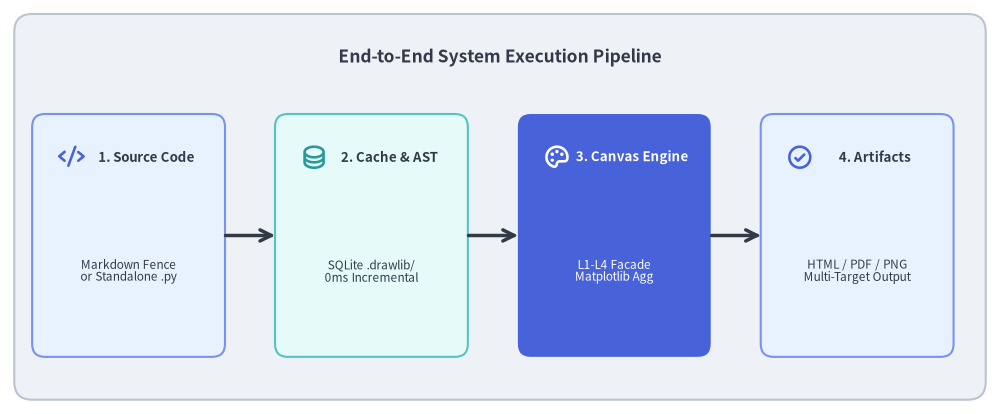
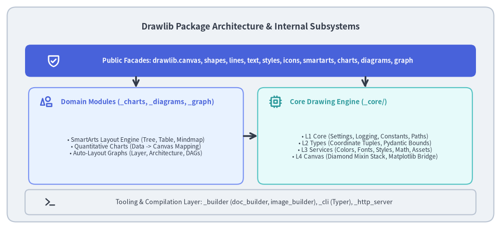

System Architecture & Design Principles
Drawlib is built from the ground up as a pure-Python, headless illustration and documentation compilation framework. It eliminates the traditional divide between software source code and graphical documentation by making visual diagrams first-class, version-controlled software artifacts.
This document details the high-level system execution flow, package boundaries, and core design principles governing Drawlib's implementation.

Source Code
from drawlib.canvas import save, setup
from drawlib.icons import phosphor
from drawlib.lines import line
from drawlib.shapes import rectangle
from drawlib.styles import Styles
from drawlib.text import text
setup(width=140, height=58)
rectangle((70, 29), width=136, height=54, style=Styles.Neutral.patch(shape_r=2.5))
text(
(70, 50),
"End-to-End System Execution Pipeline",
style=Styles.DarkBold.patch(text_size=12.5),
)
steps = [
(18, "1. Source Code", "Markdown Fence\nor Standalone .py", phosphor.code, Styles.PrimaryNeutral, Styles.PrimaryBold),
(52, "2. Cache & AST", "SQLite .drawlib/\n0ms Incremental", phosphor.database, Styles.SecondaryNeutral, Styles.SecondaryBold),
(86, "3. Canvas Engine", "L1-L4 Facade\nMatplotlib Agg", phosphor.palette, Styles.PrimaryFlat, Styles.WhiteBold),
(120, "4. Artifacts", "HTML / PDF / PNG\nMulti-Target Output", phosphor.check_circle, Styles.PrimaryNeutral, Styles.PrimaryBold),
]
for x, title, desc, icon_func, card_style, icon_style in steps:
rectangle((x, 25), width=27, height=34, style=card_style.patch(shape_r=1.8))
icon_func((x - 8, 36), width=3.8, style=icon_style)
title_style = Styles.WhiteBold if card_style == Styles.PrimaryFlat else Styles.DarkBold
desc_style = Styles.White if card_style == Styles.PrimaryFlat else Styles.Dark
text((x + 2.5, 36), title, style=title_style.patch(text_size=9.6))
text((x, 20), desc, style=desc_style.patch(text_size=8.5))
for i in range(3):
x_from = steps[i][0] + 13.5
x_to = steps[i + 1][0] - 13.5
line((x_from, 25), (x_to, 25), arrow_head="->", style=Styles.DarkBold)
save()
1. Concept: Core Architectural Tenets
Drawlib addresses the fundamental problems of GUI-based diagramming and low-level plotting libraries through three architectural pillars:
1.1. Pure Python as the Declarative Drawing Medium
Traditional diagram generators either require external domain-specific languages (e.g. PlantUML, Mermaid, Graphviz DOT) that lack programming power, or low-level plotting APIs (e.g. raw Matplotlib, Cairo) that require hundreds of lines of boilerplate for simple boxes and arrows.
Drawlib provides a high-level, declarative Python API:
- Visual elements are expressed with concise functions (
rectangle(),line(),chevron_process(),architecture()). - Python data structures (lists, dicts, tuples) drive diagram generation directly from real data.
- Diagram code runs in standard Python environments (
uv run python), with full autocomplete and type checking in modern IDEs.
1.2. Headless In-Memory Execution
Drawlib requires no display server, window manager, or headless browser to render static diagrams:
- Diagrams render entirely in-memory using Matplotlib's non-interactive
Agg(Anti-Grain Geometry) backend. - Execution is completely deterministic: given the same inputs, random seed, and font assets, Drawlib produces bit-identical PNG, SVG, or PDF outputs on Linux, macOS, and Windows.
- CI/CD runners can build hundreds of illustrations without installing complex GUI dependencies or Xvfb virtualization.
1.3. Zero-Drift Single Source of Truth
Instead of maintaining diagrams and documentation in disconnected repositories, Drawlib unifies them inside Git:
- Technical specifications author documentation in Markdown with embedded
drawlibPython blocks. - The build engine verifies all code blocks, catches execution errors, and generates synchronized HTML, Markdown, and PDF assets in a single pass.
- Architecture drift is eliminated because diagrams fail compilation if underlying interfaces change.
2. Positioning: Package Architecture & Boundaries
Drawlib's codebase (src/drawlib/) strictly isolates user-facing public interfaces from internal rendering mechanics, layout algorithms, and build tooling:

Source Code
from drawlib.canvas import save, setup
from drawlib.icons import phosphor
from drawlib.lines import line
from drawlib.shapes import rectangle
from drawlib.styles import Styles
from drawlib.text import text
setup(width=140, height=64)
rectangle((70, 32), width=136, height=60, style=Styles.Neutral.patch(shape_r=2.5))
text(
(70, 56.5),
"Drawlib Package Architecture & Internal Subsystems",
style=Styles.DarkBold.patch(text_size=12.2),
)
# 1. Public Facades (Top Layer)
rectangle((70, 47), width=126, height=9, style=Styles.PrimaryFlat.patch(shape_r=1.5))
phosphor.shield_check((15, 47), width=4.0, style=Styles.WhiteBold)
text(
(72, 47),
"Public Facades: drawlib.canvas, shapes, lines, text, styles, icons, smartarts, charts, diagrams, graph",
style=Styles.WhiteBold.patch(text_size=9.2),
)
# 2. Middle Row: Domain Subsystems (Left) vs Core Drawing Stack (Right)
# Domain Modules
rectangle((38, 26), width=60, height=27, style=Styles.PrimaryNeutral.patch(shape_r=1.8))
phosphor.shapes((13, 35.5), width=3.8, style=Styles.PrimaryBold)
text((17, 35.5), "Domain Modules (_charts, _diagrams, _graph)", style=Styles.PrimaryBold.patch(halign="left", text_size=9.6))
text(
(38, 23.0),
"• SmartArts Layout Engine (Tree, Table, Mindmap)\n• Quantitative Charts (Data -> Canvas Mapping)\n• Auto-Layout Graphs (Layer, Architecture, DAGs)",
style=Styles.Dark.patch(text_size=8.5),
)
# Core Drawing Stack
rectangle((102, 26), width=60, height=27, style=Styles.SecondaryNeutral.patch(shape_r=1.8))
phosphor.cpu((77, 35.5), width=3.8, style=Styles.SecondaryBold)
text((81, 35.5), "Core Drawing Engine (_core/)", style=Styles.SecondaryBold.patch(halign="left", text_size=9.6))
text(
(102, 23.0),
"• L1 Core (Settings, Logging, Constants, Paths)\n• L2 Types (Coordinate Tuples, Pydantic Bounds)\n• L3 Services (Colors, Fonts, Styles, Math, Assets)\n• L4 Canvas (Diamond Mixin Stack, Matplotlib Bridge)",
style=Styles.Dark.patch(text_size=8.5),
)
# Connecting arrows
line((38, 42.5), (38, 39.5), arrow_head="->", style=Styles.DarkBold)
line((102, 42.5), (102, 39.5), arrow_head="->", style=Styles.DarkBold)
line((68, 26), (72, 26), arrow_head="->", style=Styles.DarkBold)
# 3. Bottom Row: Build & Tooling Systems
rectangle((70, 7.5), width=126, height=7, style=Styles.Neutral.patch(shape_r=1.2))
phosphor.terminal((14, 7.5), width=3.5, style=Styles.DarkBold)
text(
(71, 7.5),
"Tooling & Compilation Layer: _builder (doc_builder, image_builder), _cli (Typer), _http_server",
style=Styles.Dark.patch(text_size=9.0),
)
save()
Subsystem Boundaries
- Public Domain Facades (
src/drawlib/*.py): Thin re-export modules (canvas,shapes,lines,text,icons,smartarts,charts,diagrams,graph). They expose guarded, user-friendly APIs while hiding internal implementation classes. - Internal Core Engine (
src/drawlib/_core/): The foundational drawing stack organized into strictly layered modules (l1_corethroughl4_canvas), includingl3_externalfor deterministic binary asset synchronization. - Domain Implementations (
src/drawlib/_*/): High-level visual components (_smartarts,_charts,_diagrams,_graph,_slide,_anim,_icons,_preset_styles). - Compilation & Tooling Layer (
src/drawlib/_builder/,_cli/,_http_server/): Markdown parser, code execution sandboxing, multi-target exporters, Typer CLI, and preview server.
3. Details: Internal Architecture & Runtime Environment
3.1. Matplotlib Abstraction & Backend Management
While Matplotlib powers Drawlib's rasterization and vector export, Drawlib intentionally shields developers from Matplotlib's complex API (Axes, Figure, Transform, Spines):
- Deterministic Headless Configuration: Drawlib configures Matplotlib with vector-safe settings upon canvas initialization, setting
rcParams["svg.fonttype"] = "none"(to preserve text as pure editable text glyphs) andrcParams["svg.hashsalt"] = "drawlib"(to ensure byte-for-byte deterministic SVG output across runs). - Spine & Margin Elimination: Every canvas automatically removes all axes, ticks, spines, and margins via
ax.axis("off"),tight_layout(), andsubplots_adjust(left=0, right=1, bottom=0, top=1), leaving a pure Cartesian drawing plane. - Fixed 10.0-Inch / 720pt Typography Mapping: Drawlib fixes figure width to
FIGURE_WIDTH_INCHES = 10.0($10.0 \times 72 = 720\text{ pt}$). A canvas unit therefore maps directly to $720.0 / \text{width}$ points, establishing a deterministic typographic baseline wheretext_size=10.5–12.0precisely matches standard $16\text{px}$ HTML body text when rendered.
3.2. Reproducibility & Cryptographic Caching
Drawlib's build pipeline integrates a high-performance SQLite caching engine (.drawlib/cache.db):
- Static Analysis & Dependency Tracking: Drawlib statically analyzes code blocks to identify target outputs without execution, while hashing all referenced local files (
styles.py,utils.py,_assets/). - Composite Hash: An image is re-rendered only if the code content, canvas dimensions, imported styles, or referenced assets have changed.
- Sub-Millisecond Restores: Unchanged diagrams are restored from cache in
< 1ms, allowing documentation sites with hundreds of illustrations to compile in seconds.
Next, explore the strict unidirectional dependency model in Layer Hierarchy.